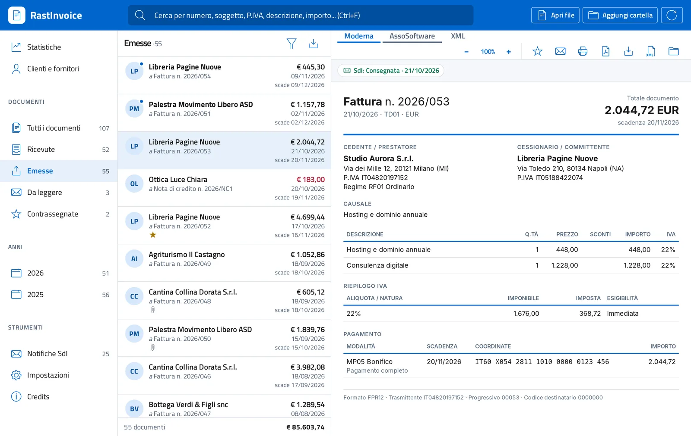

Le tue fatture, finalmente leggibili e in ordine
Visualizzatore di fatture elettroniche XML e P7M
RastInvoice apre le fatture elettroniche XML e P7M, le mostra in modo chiaro e le stampa o le salva in PDF. Tiene in ordine l'archivio di fatture ricevute ed emesse, con ricerca, rubrica di clienti e fornitori e statistiche.
- Gratuito e open source
- Funziona offline
- Windows, macOS e Linux
- Specifiche FatturaPA 1.9.1

Perché RastInvoice
La maggior parte dei visualizzatori apre una fattura alla volta. RastInvoice legge cartelle intere e ti aiuta a ritrovare ogni documento in pochi secondi.
Riservato
Nessun account e nessun server: le fatture restano sul tuo computer e i file originali non vengono mai modificati.
Trovi tutto
Ricerca a testo libero su numero, soggetto, partita IVA, descrizione e importo, con filtri per data e per contatto.
Verifica
Controlla firma digitale, totali, IVA, partite IVA, codici fiscali e IBAN con i codici di errore del Sistema di Interscambio.
Libero
Codice sorgente pubblico con licenza europea EUPL-1.2. Gratuito su Windows e Linux, senza pubblicità e senza limiti.
Funzionalità
Tutto quello che serve per leggere, controllare e archiviare le fatture elettroniche italiane, emesse e ricevute.
Apre ogni formato
- Fattura ordinaria (FPR12), fattura PA (FPA12) e semplificata (FSM10)
- File
.xmle.xml.p7mfirmati, anche in base64 o con più firme - Lotti con più fatture nello stesso file
- Archivi
.ziped email PEC.eml, senza estrarli - Cartelle intere, anche su disco di rete o NAS
Fatture leggibili
- Vista Moderna, compatta e chiara, con ingrandimento
- Vista con il foglio di stile ufficiale AssoSoftware, applicato da un motore interno
- Vista XML, formattata o originale
- Allegati visibili senza uscire dal programma: PDF, immagini, Word, Excel, CSV
Archivio e ricerca
- Fatture ricevute ed emesse separate in automatico in base alla tua partita IVA
- Ricerca a testo libero e filtri per data e per contatto
- Sezioni da leggere, contrassegnate, con anomalie e per anno
- Indice locale veloce anche con decine di migliaia di documenti
Clienti e fornitori
- Rubrica creata dalle fatture, senza inserire nulla a mano
- Per ogni contatto documenti, totali e IVA per anno
- Statistiche su fatturato, acquisti, IVA a debito e a credito
- Grafico mensile o annuale e classifica di clienti e fornitori
Controlli e notifiche SdI
- Verifica crittografica della firma digitale: integrità e firmatario
- Controlli di calcolo e formali con i codici di errore del Sistema di Interscambio
- Ricevute e notifiche SdI collegate alla fattura, con la spiegazione di ogni sigla
Stampa ed esportazione
- PDF della fattura creato dal programma, in A4 con testo selezionabile
- Stampa e salvataggio in HTML
- Salvataggio dell'XML estratto dalla busta firmata
- Esportazione dell'elenco in CSV per Excel
Portable
- Su Linux e da sorgente funziona senza installazione
- Modalità portable: dati accanto al programma, anche su chiavetta USB
- Riga di comando per script e integrazioni
Accessibile
- Interfaccia secondo il design system di Designers Italia
- Progettata per le WCAG 2.1 livello AA
- Uso completo da tastiera e ingrandimento fino al 200%
Riservatezza
- Funziona senza connessione a Internet
- Nessun account, nessuna statistica di utilizzo, nessuna pubblicità
- I file originali non vengono mai modificati
Come si presenta
Le immagini usano un archivio dimostrativo con dati di fantasia.
Scarica RastInvoice
Scegli il tuo sistema. RastInvoice arriva a breve negli store: le schede sono in preparazione.
Windows
Per Windows 10 e 11 a 64 bit. Pacchetto firmato dallo Store: nessun avviso di sicurezza e aggiornamenti automatici.
macOS
Per Mac con processore Intel o Apple Silicon, macOS 10.13 o successivo. Installazione e aggiornamenti dal Mac App Store.
Linux
Per distribuzioni recenti a 64 bit con WebKitGTK 4.1, come Ubuntu 22.04, Debian 12 e Fedora 38.
Il pacchetto .deb è per Debian, Ubuntu e Linux Mint; il pacchetto .rpm per
Fedora, openSUSE e RHEL; AppImage funziona su quasi tutte le distribuzioni senza installazione. I pacchetti
saranno pubblicati a breve, insieme al codice sorgente.
RastInvoice in breve
RastInvoice è un visualizzatore di fatture elettroniche italiane gratuito e open source, sviluppato in Italia da Andrea Re (digitare.net). Apre le fatture in formato FatturaPA (XML e P7M firmato), le mostra in modo leggibile, le converte in PDF e tiene l'archivio di fatture ricevute ed emesse sul computer, senza inviarle a nessun server.
Guide
| Tipo di programma | Visualizzatore e archivio di fatture elettroniche |
|---|---|
| Versione | 1.1.6 (novembre 2026) |
| Sistemi | Windows 10 e 11, macOS 10.13 o successivo, Linux a 64 bit |
| Prezzo | Gratuito su Windows e Linux, 2,99 € su Mac App Store |
| Formati | XML, XML.P7M (DER, BER, base64), ZIP, EML (PEC), lotti |
| Tipi di fattura | FPR12 tra privati, FPA12 verso la PA, FSM10 semplificata |
| Specifiche | FatturaPA 1.9.1, in vigore dal 15 maggio 2026 |
| Esportazione | PDF A4, HTML, XML, CSV |
| Connessione a Internet | Non necessaria |
| Licenza | EUPL-1.2, codice sorgente presto su GitHub |
| Lingua | Italiano |
Domande frequenti
Come si apre una fattura elettronica XML?
Apri il file .xml con RastInvoice: con un doppio clic, trascinandolo nella finestra o dal menu
Apri. La fattura viene mostrata in una vista leggibile al posto del codice XML. Puoi aprire anche
un'intera cartella di fatture.
Come si apre un file .xml.p7m?
Il file .p7m è la fattura elettronica con firma digitale. RastInvoice lo apre direttamente,
senza altri programmi di firma, ne estrae l'XML e verifica integrità della firma e firmatario.
Come si converte una fattura elettronica in PDF?
Dall'anteprima della fattura scegli PDF: il file viene creato dal programma, in formato A4 con testo selezionabile. Puoi anche stampare la fattura o salvarla in HTML.
Posso aprire le fatture scaricate dal cassetto fiscale o ricevute via PEC?
Sì. Puoi aprire i file scaricati dal portale Fatture e Corrispettivi dell'Agenzia delle Entrate, gli archivi
.zip e le email PEC .eml, senza estrarli.
Funziona con le fatture verso la Pubblica Amministrazione?
Sì: fattura PA (FPA12), fattura tra privati (FPR12) e fattura semplificata (FSM10), secondo le specifiche tecniche FatturaPA 1.9.1, in vigore dal 15 maggio 2026.
Le mie fatture vengono inviate a un server?
No. RastInvoice funziona senza connessione a Internet e senza account. Si collega a Internet solo se lo chiedi tu, per scaricare il foglio di stile ufficiale o controllare le nuove versioni. Dettagli nell'informativa sulla privacy.
Quanto costa?
Su Windows e Linux è gratuito, senza pubblicità e senza limiti. Su macOS costa 2,99 € una tantum sul Mac App Store, per coprire l'iscrizione al programma per sviluppatori di Apple.
RastInvoice conserva le fatture a norma?
No. RastInvoice è un visualizzatore: legge e archivia le fatture sul tuo computer, ma non sostituisce la conservazione digitale a norma, che resta a carico del servizio del tuo intermediario o dell'Agenzia delle Entrate.
Contatti
Domande sul programma, segnalazioni, richieste di funzionalità o di collaborazione: scrivici e ti rispondiamo il prima possibile.
Email: rastinvoice@digitare.net
Sostieni il progetto
RastInvoice è gratuito. Se ti è utile puoi sostenerne lo sviluppo con una donazione: se vuoi, ti citiamo tra i sostenitori nei Credits del programma.
Fai una donazione con PayPal